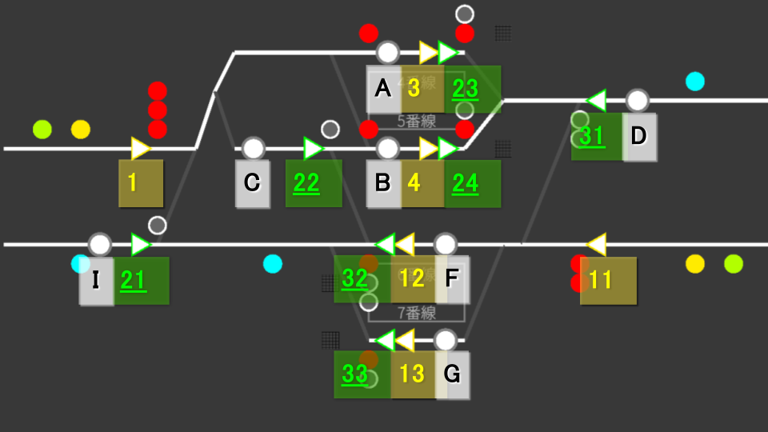
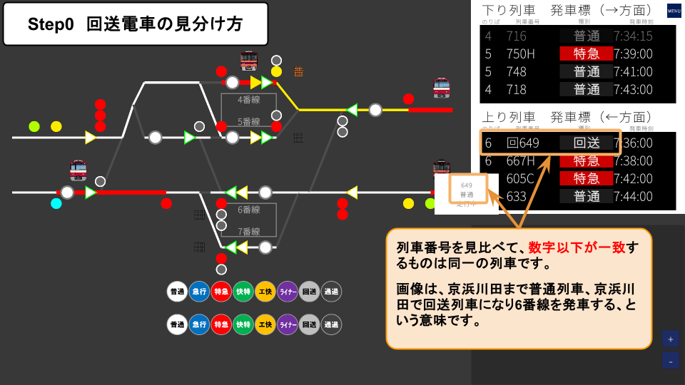
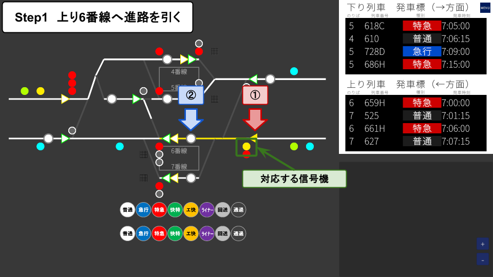
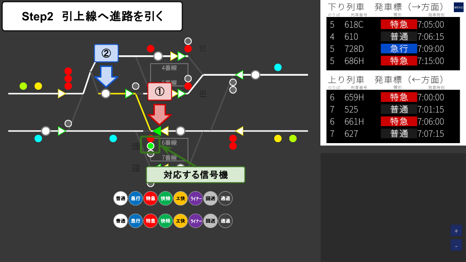
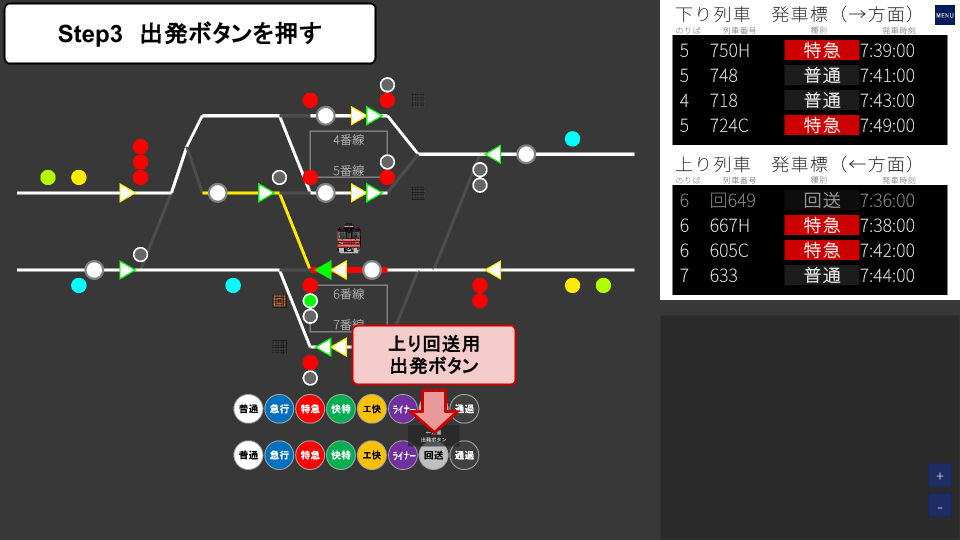
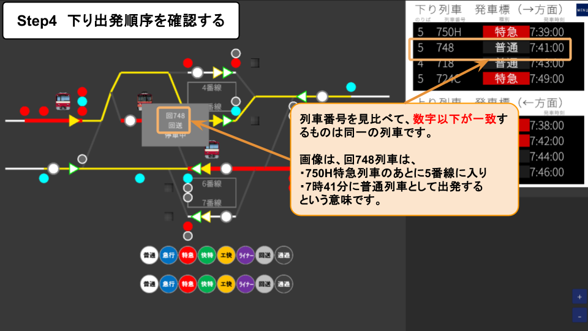
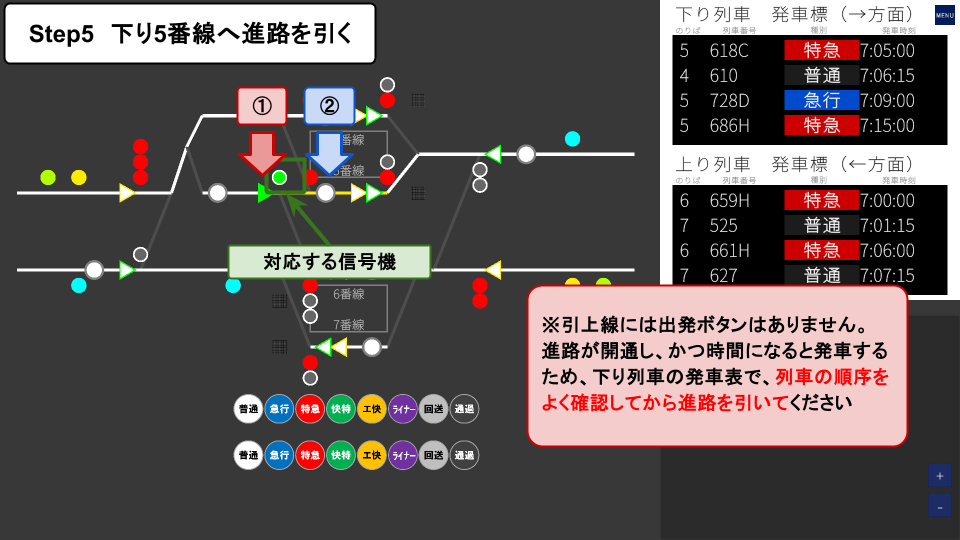
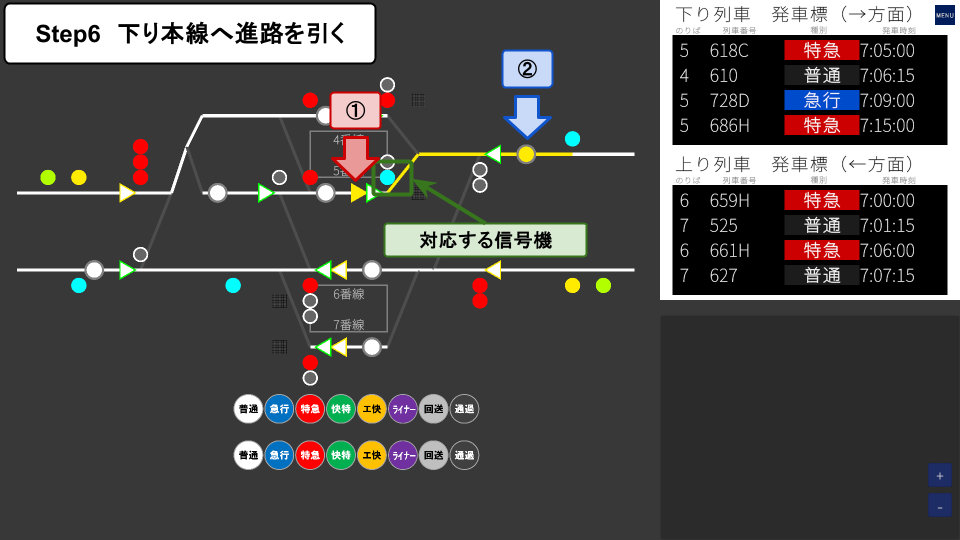

🎯 Map Overview
Keihin-Kawata is a central junction station (mid-line stop) with four platforms (Tracks 4–7) and a siding used for turnaround operations. Some trains pass straight through on the main line, while others enter the siding, reverse direction, and depart again as a different service — giving you a variety of operational patterns to manage.
- Tracks: Track 4 / Track 5 / Track 6 / Track 7
- Siding: Yes (used for turnaround)
🗺 Lever Layout

Use the diagram above to see how Start Levers, End Levers, and tracks are arranged in the station.
🔧 Route List
A route is defined by a Start Lever and an End Lever. For example, route 1A is opened by Start Lever "1" and End Lever "A".
Routes at Keihin-Kawata come in two types: Main Line and Shunting.
Main Line Routes
Routes used by passenger trains between the main line and the station. Start levers light up yellow.
| Route | Start → End | Purpose |
|---|---|---|
| 1A | 1 → A | Entry from the outbound main line into Track 4 |
| 1B | 1 → B | Entry from the outbound main line into Track 5 |
| 1C | 1 → C | From the outbound main line into the siding |
| 3D | 3 → D | Departure from Track 4 onto the outbound main line |
| 4D | 4 → D | Departure from Track 5 onto the outbound main line |
| 11F | 11 → F | Entry from the inbound main line into Track 6 |
| 11G | 11 → G | Entry from the inbound main line into Track 7 |
| 12I | 12 → I | Departure from Track 6 onto the inbound main line |
| 13I | 13 → I | Departure from Track 7 onto the inbound main line |
Shunting Routes
Used for in-yard movements such as entering the siding or turnaround operations. Start levers light up green.
| Route | Start → End | Purpose |
|---|---|---|
| 21C | 21 → C | Entry from the inbound main line into the siding |
| 22B | 22 → B | Entry from the siding into Track 5 |
| 23D | 23 → D | Departure from Track 4 to the turnback point on the outbound main line |
| 24D | 24 → D | Departure from Track 5 to the turnback point on the outbound main line |
| 31F | 31 → F | Entry from the outbound main line into Track 6 |
| 31G | 31 → G | Entry from the outbound main line into Track 7 |
| 32C | 32 → C | Departure from Track 6 into the siding |
| 32I | 32 → I | Departure from Track 6 to the turnback point on the inbound main line |
| 33I | 33 → I | Departure from Track 7 to the turnback point on the inbound main line |
🔄 Turnaround Operation (Keihin-Kawata's highlight)
At Keihin-Kawata, an inbound service train arrives at the platform, moves to the siding to reverse direction, and departs again as an outbound service. The flow switches between service → shunting → service, so you need to switch between main-line and shunting levers and signals accordingly. It can feel confusing at first, but the 6-step procedure always works.
📚 Prerequisites: Identifying UI Elements
Start Lever border color
| Border color | Purpose | Description |
|---|---|---|
| Yellow | Main line | Used to set routes for service (revenue) trains |
| Green | Shunting | Used for in-station moves such as entering the siding (required for turnaround) |
Signal fill style
| Fill style | Purpose |
|---|---|
| Solid fill | Signals for main-line routes |
| White-bordered | Signals for shunting routes (shunting signals) |
🔍 Identify the Turnaround Trains
The Morning Rush scenario contains four turnaround trains. Each one changes its train number through the sequence: "Arrival → Siding entry → Siding exit → Departure." Watch the departure board, and when you see one of the arrival numbers below, start the turnaround procedure.
| Arrival | Siding entry | Siding exit | Departure |
|---|---|---|---|
| 649 | 回649 | 回748 | 748 |
| 651 | 回651 | 回750 | 750 |
| 653 | 回653 | 回852 | 852 |
| 655 | 回655 | 回854 | 854 |

🔢 6-Step Procedure
-
Set the route to Track 6 (Main line)
Bring the arriving service train into Track 6. Operate a yellow-bordered Start Lever (main line) and the End Lever for Track 6. The solid-fill signal will turn to proceed.

-
Set the route to the siding (Shunting)
Move the train from Track 6 into the siding. Operate a green-bordered Start Lever (shunting) and the End Lever for the siding. The white-bordered signal (shunting signal) will turn to proceed.

-
Press the Departure Button (inbound out-of-service)
Press the inbound out-of-service Departure Button. The train begins moving toward the siding.

-
Check the outbound departure order
On the departure board, check when and from which platform the turnaround train will depart. After the turnaround, each train will reappear with one of the departure numbers: 748 / 750 / 852 / 854.

Trains in the siding depart automatically when the route is set and the scheduled time arrives. If you set the routes in the wrong order, you can block following trains, so always check the outbound departure order on the departure board before setting the route.
-
Set the route to Track 5 (Shunting)
Move the train from the siding to Track 5 (outbound). Operate a green-bordered Start Lever (shunting, on the siding side) and the End Lever for Track 5. The white-bordered signal will turn to proceed.

-
Set the route to the outbound main line (Main line)
Send the train from Track 5 out to the outbound main line. Operate a yellow-bordered Start Lever (main line) and the End Lever pointing outbound. The solid-fill signal will turn to proceed, and the train will depart at the scheduled time.

⚠ Common Mistakes and Cautions
① Don't mix up lever and signal types
Do not confuse main-line (yellow) and shunting (green) Start Levers. Main-line routes cannot be opened with shunting levers, and vice versa.
② Timing is critical for departures from the siding
Since there is no Departure Button and trains leave automatically at the scheduled time, always check the departure order on the board before setting the route.
③ Don't misidentify trains
The train number changes through "649 → 回649 → 回748 → 748" as the vehicle passes through the turnaround. Use the departure board to match the arriving number with the corresponding turnaround service so you don't miss the right train.